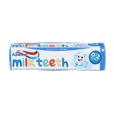
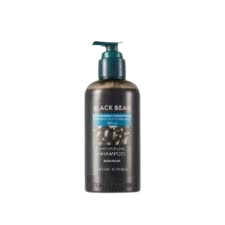
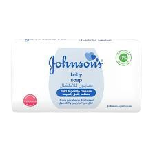
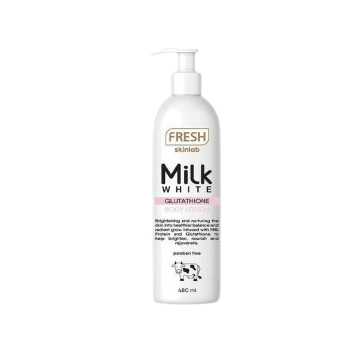
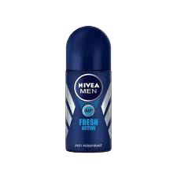
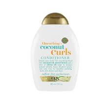
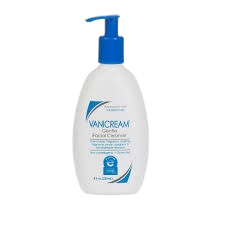
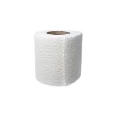
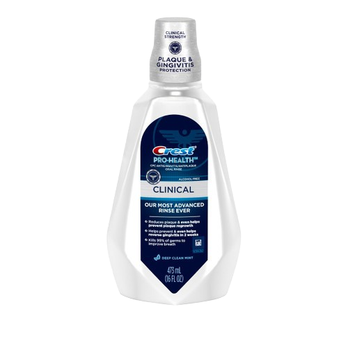
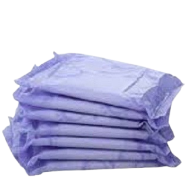

| Toothpaste (Mint Fresh) |
100g tube |
This mint fresh toothpaste helps fight cavities, freshen breath, and remove plaque. Its cool mint flavor leaves the mouth feeling clean and refreshed after every use. Suitable for daily brushing, it’s a must-have for maintaining oral hygiene. |
- Fluoride
- Calcium carbonate
- Water
- Sorbitol
- Sodium lauryl sulfate
- Peppermint oil
- Glycerin
- Carrageenan
|
 |
| Shampoo (Moisturizing) |
200ml bottle |
This moisturizing shampoo gently cleanses the scalp and hair while restoring hydration. It’s formulated to leave hair soft, shiny, and manageable after every wash. Ideal for dry or damaged hair, it contains nourishing ingredients to strengthen and protect. |
- Water
- Sodium laureth sulfate
- Glycerin
- Cocamidopropyl betaine
- Argan oil
- Fragrance
- Citric acid
- Preservatives
|
 |
| Bath Soap (Antibacterial) |
135g bar |
This antibacterial soap provides a deep cleanse, removing dirt, germs, and bacteria from the skin. It leaves a fresh, clean scent and a smooth feeling after bathing. Suitable for daily use, it offers protection for the whole family. |
- Sodium palmate
- Sodium palm kernelate
- Water
- Glycerin
- Triclosan (antibacterial agent)
- Fragrance
- Sodium chloride
- Tetrasodium EDTA
|
 |
| Body Lotion (Aloe Vera) |
250ml bottle |
This aloe vera body lotion hydrates and soothes dry skin with every application. Its lightweight formula absorbs quickly, leaving skin soft without feeling greasy. Enriched with aloe, it’s perfect for daily moisturizing and after-sun care. |
- Water
- Aloe vera extract
- Glycerin
- Mineral oil
- Stearic acid
- Cetyl alcohol
- Fragrance
- Preservatives
|
 |
| Deodorant Roll-On |
50ml bottle |
This roll-on deodorant provides long-lasting odor and sweat protection. Its gentle formula glides on smoothly and dries quickly, leaving no sticky residue. Perfect for all-day freshness, it comes in a clean, subtle fragrance. |
- Water
- Aluminum chlorohydrate
- Glycerin
- Propylene glycol
- Fragrance
- Aloe vera extract
- Preservatives
|
 |
| Conditioner (Strengthening) |
200ml bottle |
This strengthening conditioner repairs and protects weak, damaged hair. It deeply nourishes each strand, leaving hair softer, smoother, and easier to manage. Designed for regular use, it helps prevent breakage and split ends. |
- Water
- Cetearyl alcohol
- Dimethicone
- Hydrolyzed keratin
- Glycerin
- Argan oil
- Fragrance
- Preservatives
|
 |
| Facial Wash (Brightening) |
100ml tube |
This brightening facial wash gently removes dirt, oil, and makeup while improving skin radiance. It contains mild exfoliants and brightening extracts to enhance natural glow. Suitable for daily cleansing, it leaves skin soft, clean, and refreshed. |
- Water
- Glycerin
- Sodium lauryl sulfate
- Niacinamide (Vitamin B3)
- Papaya extract
- Fragrance
- Citric acid
- Preservatives
|
 |
| Toilet Paper (3-ply) |
200 sheets per roll |
This soft, strong, and absorbent 3-ply toilet paper is perfect for everyday bathroom use. Its gentle texture ensures comfort, while its durable quality prevents tearing. Each roll is designed to last, making it a household essential. |
- Virgin pulp
- Water
- Softening agents
- Bleaching agents
|
 |
| Mouthwash (Fresh Mint) |
250ml bottle |
This alcohol-free mouthwash provides long-lasting freshness and helps fight bacteria. It reaches areas that brushing might miss, giving a complete clean feeling. The refreshing mint flavor makes it pleasant to use after meals or before bed. |
- Water
- Glycerin
- Sorbitol
- Cetylpyridinium chloride
- Menthol
- Flavor
- Sodium fluoride
- Preservatives
|
 |
| Sanitary Napkins (Ultra Thin with Wings) |
Pack of 8 pads |
These ultra-thin sanitary napkins provide secure, comfortable protection during periods. Each pad has wings for added stability and a soft top layer for extra comfort. Designed for reliable absorption, they keep users feeling fresh and dry throughout the day. |
- Non-woven fabric
- Absorbent core (pulp and polymer)
- Adhesive strip
- Backsheet (polyethylene)
- Fragrance-free
|
 |